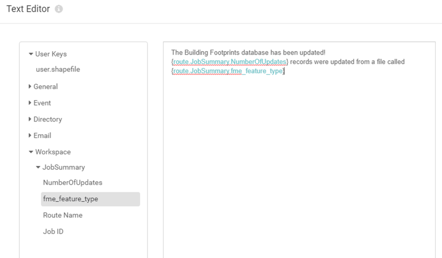

To-Do
- Clarify step 8
- Quiz
- Projects
Learning Objectives
After completing this unit, you’ll be able to:
- Add an Automations Writer to a workspace.
- Set up an outgoing Email Action.
- Trigger an Email notification through Automations.
Resources
- Starting workspace template
- Starting FME Server project
- Complete FME Server project
- C:\FMEData2020\Projects\ServerAuthoring\RealTime-Ex4-Begin.fsproject
- C:\FMEData2020\Projects\ServerAuthoring\RealTime-Ex4-Complete.fsproject
Introduction
You have recently created an Automation in FME Server that processes building footprint updates with both the Directory Watch and Email Triggers. Now your supervisor is wondering if they can receive an email whenever the corporate database is updated.
Using an external email server, you think that it is possible to configure the existing Automation in FME Server to satisfy this requirement. You also realize that you can use an Automations Writer in the workspace to include additional information about the updates made to the corporate database in the email that is sent.
1) Open Workspace in Workbench
Open the starting workspace template in FME Workbench (2021.1 or later).
You are going to update this workspace to generate a summary of the number of records that were updated from the incoming Shapefile. Add an Aggregator transformer and connect it in parallel to the Shapefile Reader like this:

Open the Aggregator parameters dialog and set the Count Attribute to NumberOfUpdates.
3) Add Automations Writer
Go to Writers > Add Writer and select the FME Server Automations format. Set the Feature Type Definition to Automatic... and click OK to add the writer to the canvas.
When prompted, set the Feature Type Name to JobSummary and click OK.
Connect the Automations Writer feature type to the output port of the Aggregator transformer.
4) Clean up Automations Writer Attributes
After connecting the Automations writer, you'll notice that all the attributes from the Shapefile data are included on the writer. We don't need all that information within the Automation. Double-click JobSummary to open its parameter dialog, then go to User Attributes and select Manual under Attribute Definition.
Remove all the attributes except for the one we created earlier, NumberOfUpdates. Set the Type for NumberOfUpdates to int, as this is a numeric value.

Click OK to apply that change. At this stage, there should be two attributes on the JobSummary Feature Type: NumberOfUpdates and fme_feature_type

5) Save and Publish Workspace
Save the workspace.
Select File > Publish it to FME Server.
Choose your FME Server Connection to use. Click Next.
Use the Training Repository (click New... and create it if it doesn't exist). Check Upload data files. Click Next.
Ensure only the Job Submitter service is checked. Click Publish.
6) Import FME Server Project
Need to update Server project for https://s3.amazonaws.com/gitbook/Server-Authoring-2019/ServerAuthoring4RealTime/Exercise3.html
We need to import the Automation you've already created that checks for building updates.
Download the project here.
Open the FME Server web interface and navigate to the Projects > Manage Projects page.

Click the Import button and select the project you just downloaded.
6) Update Workspace Action
Navigate to Automations > Manage Automations. Click the Incoming Building Footprints Automation to edit it.
You can see that this Automation starts with either a Directory Watch Trigger with a Filter or an incoming Email (SMTP) Trigger. On success, both streams run the RealTime-Ex2-Complete.fmw workspace. We need to update this Action to use our new workspace.
Click on the Workspace Action in the Automation to open its parameters. Change the Workspace parameter to your recently published workspace. Set the SpatialLite Database path to $(FME_SHAREDRESOURCE_DATA)/Output/building_footprints.sl3 (the output SpatialLite database we just added using the Server Project). Click Apply.
A new output port should appear in the Automation, created by the Automation Writer we just added to the workspace:

7) Add External Action
The final step in the Automation is to add an email service External Action through which a response will be sent.
Select the plus icon in the bottom left and drag an Action (orange) to the canvas. Connect this to the JobSummary output port of the Run Workspace node, which will now also act as a Trigger.

Click the FME logo on Action to open its parameters. Choose Log a message for the Action. Enter the following for the Formatted Message:
The Building Footprints database has been updated! {route.JobSummary.NumberOfUpdates} records were updated from a file called {route.JobSummary.fme_feature_type}
If you prefer, you can enter this manually using the Text Editor. You can access it by clicking the drop-down arrow next to Formatted Message and clicking Text Editor:

Similar to the Text Editor in FME Workbench, you can construct values using the tree of keys on the left. Double-click to insert one.

After entering in your Formatted Message, click Apply.
8) Test Automation
Test the Automation by uploading the ZIP file attachment (link) of the Shapefile datasets (.dbf, .prj, .shp, .shx) to FME Server's Shared Resources Data folder. When the update SHP files arrive, they will kick off the Automation and log the results.
Upload steps
Inspect log steps